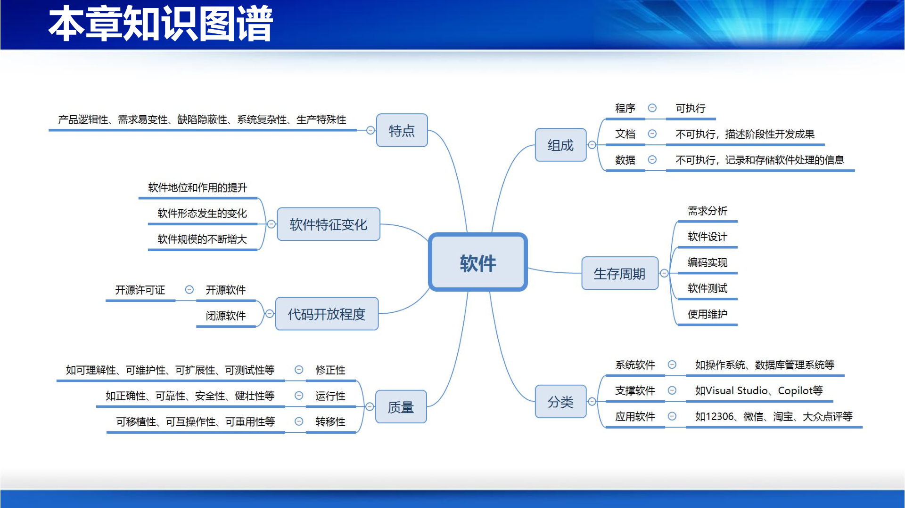
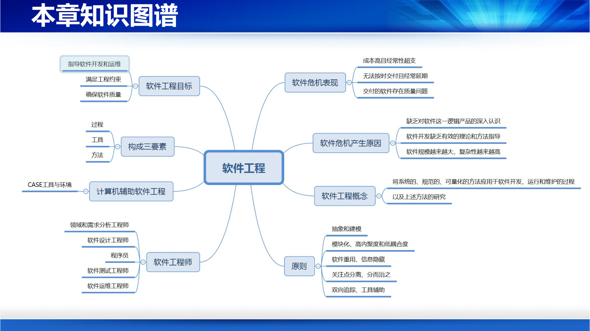
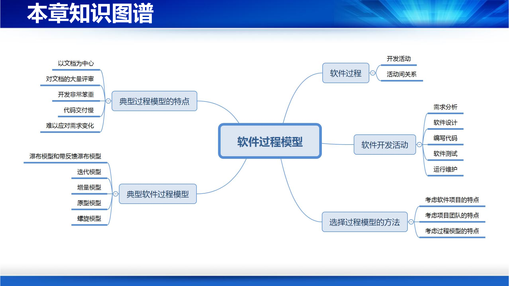

本章知识图谱

早期人们编写程序往往是一步到位的个人创作，例如火车票购买、酒店预订、网上购物等应用，试图"通过一个步骤就将程序写出来"是不现实的。工程实践启示我们：建造狗窝与建造大厦有本质区别——前者简单、质量要求不高、一个人即可完成；后者复杂、质量要求很高、需要团队合作。同样，软件开发也需要经历多个相互关联、循序渐进的步骤，包括了解需求、设计图纸、进场施工等阶段，逐步产出需求分析、系统设计、程序代码以及配套文档和数据。
软件（Software） 是指在计算机系统的支持下，能够完成特定功能与性能的程序、数据和相关文档的集合。用公式表示：
$$ \text{软件} = \text{程序} + \text{数据} + \text{文档} $$
这些组成部分统称为软件制品（Software Artifact）：
从开发者的角度看，软件包括可执行部分（程序、部分数据）和不可执行部分（文档、数据）。
软件开发的涉及面广、参与人员多、产生的制品多，仅靠人脑记忆存在明显不足：
编写文档的目的包括：
我国已发布《软件工程国标文档集合》，如 GB8567-88 和 GB8567-2006，规范了软件开发过程中应产生的文档。
软件 ≠ 程序，开发软件 ≠ 编写程序：
万物均有生命周期，软件也不例外。软件生命周期（Software Lifecycle） 是指软件从提出开发开始，到开发出系统、运行维护，直至最终退役所经历的全过程。生命周期内不同阶段具有不同特征，会产生不同的软件制品。
软件生命周期涵盖以下核心问题：
软件作为特殊的逻辑产品，具有以下显著特点：
逻辑性
设计开发性
易变性
复杂性
缺陷的隐蔽性
军用软件除具有一般软件的特点外，还具有以下特殊性：
典型军用软件包括：导弹中的飞行控制软件、指挥信息系统、后勤保障软件等。
按照服务对象、功能和作用，软件可分为三类：
| 类别 | 服务对象 | 软件的功能 | 发挥的作用 |
|---|---|---|---|
| 应用软件 | 行业和领域的用户 | 为特定行业和领域问题提供基于软件的解决方案，创新应用领域的问题解决模式 | 提供更为便捷、快速、高效的服务 |
| 系统软件 | 各类应用软件 | 为应用软件运行和维护提供基础设施和服务，如加载、通讯、互操作、管理等 | 作为应用软件的运行环境 |
| 支撑软件 | 软件开发者和维护者 | 为软件系统的开发和维护提供自动和半自动的支持 | 提高软件开发效率和质量 |
闭源软件是指软件代码不对用户开放的一类软件。用户购买时只获得可运行软件或服务，无法获得源代码，通常以许可证（License）方式授权用户使用。
闭源软件带来的问题：
典型闭源软件和企业：微软的 Windows、Office，以及微软、IBM、Oracle 等。
开源软件（Open Source Software） 是一种源代码可以自由获取和传播的计算机软件。其拥有者通过开源许可证赋予被许可人对软件进行使用、修改和传播的权利。
开源软件的好处：
典型开源软件：Linux、Ubuntu、Android AOSP、Chromium、VirtualBox、Nginx、Apache、Tomcat、PostgreSQL、MySQL、Kafka、RabbitMQ、TensorFlow、PyTorch、OpenClaw、Qwen、llama.cpp / Ollama 等。
开源软件正在逐步替代闭源软件：
开源许可证声明获得开源代码后拥有的权利，界定对开源作品可进行的操作以及禁止的操作，规范开源软件的使用要求和约束。
需要开源许可证的原因：
开源许可证主要分为两类：
宽松式开源许可证
Copyleft 式开源许可证
Apache 许可证：
GPL 许可证：
不同许可证的差别可概括为：修改源码后是否可闭源、新增源码是否需遵循同样许可、是否需版权说明、是否可用开源软件名字促销衍生代码、是否需要对源代码修改提供说明等。总体上，MIT、BSD、Apache 约束较弱，LGPL、MPL、GPL 约束较强。
典型案例：Instagram 仅用 5 名软件工程师、十多款开源软件、8 周时间打造出最初版本，说明重用和集成开源软件是快速搭建高质量系统、提高开发效率和质量的有效手段。
据统计，78% 的公司基于开源运行，少于 3% 的公司完全不使用开源；89% 的公司认为利用开源大幅度提高了软件创新速度；64% 的公司参与开源，超过 66% 的公司优先考虑利用开源。贡献开源和利用开源已成为工业界的广泛共识和重要软件开发模式。
软件质量是指软件满足给定需求的程度，是产品的生命线。
软件质量要素包括：
华为公司 2019 年第一号文件《全面提升软件工程能力与实践，打造可信的高质量产品》中提出把可信作为第一优先级，放在功能、特性和进度之上。可信软件的基本要求包括：
软件运行环境经历了从孤立、独立、局域和可控到分布、开放、动态、难控、无处不在计算环境的演变：
当前软件形态发生了根本性变化：
社会技术系统：由人、社会组织、物理设备、过程等要素共同组成和相互作用的人机物共生系统。软件系统无法单独存在，需与物理、社会系统交互作用。
系统之系统（System of Systems）：由一组面向任务、服务于不同对象的子系统构成。每个子系统可独立运作并提供相对独立功能，整个系统通过各独立系统间交互实现全局任务。
分布式异构系统：拥有大量形式多样、地理或逻辑上分布、部署在互联网上的软件实体。分布性是必须的，因为越来越多的应用本身就是分布的，且分布有助于提高可靠性和安全性。软件实体通常是异构的，异构性是必然。
动态演化系统：系统边界和需求具有不确定性和持续演变性。软件系统需要根据外部环境变化不断调整自身，包括体系结构和交互协作等，运维和运行交织在一起。例如城市交通管理系统、银行服务信息系统、医疗保证信息系统、作战指挥控制系统等。
系统联盟：大规模复杂信息技术系统由大量相对独立、自我控制和管理的系统组装而成。这些系统分属不同组织管理，共同工作和相互共存，并非一开始就设计好，而是演化而成，联盟动态变化。开发系统联盟需要采用社会技术观点，借助系统工程方法。
生态系统：
生态的特点：共同环境 + 诸多要素 + 独立演化 + 相互依存。
构成软件系统的代码行数量、运行时的进程和线程及交互数量、处理的数据量、连接的设备和人员数量等不断增加：
软件系统广泛应用于：高性能计算、信息物理系统、智能机器人、云计算、健康医疗、城市交通、军事信息系统、航空航天等领域。
现实挑战：
使命：加大、加快国产化软件系统的研发和应用，使命伟大、责任重大、任重道远。
我国通过工业 2025 等计划，逐步在关键领域成为世界第一阵营：AI（DeepSeek、Qwen、Kimi 等）、机器人（Unitree 宇树等）、无人机（DJI）、航天（天宫、神舟、嫦娥）、航空（第六代先进战机、Y20 等）等。
本章知识图谱

20 世纪 50-60 年代，计算机软件应用领域发生变化：
典型案例：IBM OS/360 超大型软件项目（1960s 初）：
这一时期软件开发呈现"作坊式个体创作"特点：
作坊式的个体编程开发无法适应大批量和大规模软件系统的开发，主要表现在：
随着软件规模扩大、需求增长、成功概率下降、软件生产率跟不上代码规模增长，软件开发面临严峻挑战。软件危机由此出现，主要表现包括：
软件危机的产生根源主要有三方面：
因此，软件开发迫切需要理论和方法指导，软件工程应运而生。
诞生标志：1968 年，在西德南部小城，NATO 科技委出资召开会议，11 个国家 50 位代表参加，主题是"如何解决软件危机"，会议提出了"软件工程"的概念和思想，标志着软件工程的诞生。
软件工程产生的动机：解决软件危机，使软件系统开发能够：
IEEE 93 定义：软件工程是将系统的、规范的、可量化的方法应用于软件的开发、运行和维护的过程，以及上述方法的研究。
具体内涵：
软件工程对软件开发的新认识：
软件开发方式的改变：从个体作坊式行为转向基于团队的协同开发方式，强调团队协作、分步实施、质量保证、开发技术和支持工具。
软件工程包括三个核心要素：
过程（Process）
方法学（Methodology）
工具（Tool）
计算机辅助软件工程（Computer-Aided Software Engineering, CASE） 是指在软件工程活动中，开发人员按照软件工程的方法和原则，借助于计算机及其软件的帮助来开发、维护和管理软件产品的过程。
需要 CASE 的原因：
正所谓"工欲善其事，必先利其器"。
CASE 工具和环境：
CASE 工具分类：
软件开发的本质是：
$$ \text{软件开发} = \text{软件创作} + \text{软件生产} $$
在成本、进度等约束下，指导软件开发和运维，开发出满足用户要求的足够好的软件。
软件工程遵循以下基本原则：
抽象和建模
模块化
软件重用
信息隐藏
关注点分离
分而治之
双向追踪原则
工具辅助
软件工程发展大致经历以下阶段：
20 世纪 50-60 年代
20 世纪 70 年代
20 世纪 80 年代
20 世纪 90 年代
21 世纪前十年
近十年
我国软件工程起步于 1980 年前后，过去四十多年取得长足进步：
软件工程是一门交叉学科，与计算机科学与技术、数学、数据科学、复杂性科学、人工智能、工程和管理科学、认知和社会科学等相互交叉：
不变的：
变化的：
软件工程培养多种角色：领域和需求分析工程师、软件设计工程师、程序员、软件测试工程师、软件运维工程师、软件项目管理人员等。需要具备创新能力、系统能力、解决复杂工程问题能力等。
IEEE SWEBOK V3.0（SoftWare Engineering Body of Knowledge）将软件工程知识分为多个知识域（Knowledge Area, KA）：
| 课程特点 | 教学难点 |
|---|---|
| 内容"虚"：针对软件复杂逻辑系统，思想性和抽象教学内容多 | 难听懂、不易学：知识点抽象，难以讲透，不易理解和掌握 |
| 要求"实"：掌握软件工程实践能力，解决软件开发实际问题 | 知难做更难：运用知识开发软件难，开发出高质量软件难 |
教学重点：不能停留于知识讲授、纸上谈兵，实践教学是课程教学重点，也是上好这门课的关键。
本章知识图谱

软件开发具有以下特点：
基于智力的协作过程
软件项目内在复杂性
循序渐进的开发过程
过程（Process） 包含三个要素：
软件过程（Software Process） 是指按照项目进度、成本和质量要求，遵循用户需求，开发和维护软件、管理软件项目的一系列有序软件开发活动。软件开发活动包括：
软件过程模型（Software Process Model） 定义了软件开发的具体活动以及活动间的逻辑关系。它回答了"按照什么样的过程来有序地开发软件"这一问题。
软件过程模型涉及：
软件工程产生之前，软件开发是"作坊式个人创作"：
OS/360 等超大型项目的失败促使人们认识到需要系统、规范性的软件过程模型指导。
常见的软件过程模型包括：
每种模型有其各自特点和适用场所。
瀑布模型于 1970 年提出，是首个软件过程模型。
瀑布模型将软件开发过程划分为若干顺序执行的阶段，典型阶段包括：
需求分析（Requirement Analysis）
概要设计（Architecture Design）
详细设计（Detailed Design）
编码实现（Implementation）
集成测试（Integration Test）
确认测试（Validation Test）
为应对瀑布模型的不足，可引入反馈和回溯机制：
但改进模型仍存在不足：软件开发处于动荡之中，需等到所有功能实现后才能得到可运行软件。
增量模型（Incremental Model） 的核心思想是渐进式、增量式地实现软件功能。
需求分析和概要设计一次性完成，之后将软件划分为多个增量，每个增量经历详细设计、编码实现、集成测试、确认测试等阶段，逐步交付。
迭代模型（Iterative Model） 通过多次迭代逐步完善软件。
每次迭代都经历一个完整的过程（需求分析、概要设计、详细设计、编码实现、软件测试），每次迭代完成部分可确定的软件需求。
| 维度 | 增量模型 | 迭代模型 |
|---|---|---|
| 核心思想 | 将软件功能分块，逐块增量实现 | 多次循环，每次完善部分需求 |
| 每次产出 | 一个可交付的、相对完整的功能增量 | 一个可运行的、逐步完善的版本 |
| 需求要求 | 需求整体可确定，变化不大 | 需求难以一次性确定，持续变化 |
| 适用场景 | 需求明确、可分解为模块的系统 | 需求模糊、需要不断探索的系统 |
简言之，增量模型是"一块一块地做"，迭代模型是"一遍一遍地改"。
原型模型（Prototype Model） 是为解决需求获取难题而提出的模型。
适合于需求难导出、不易确定且持续变动的软件。
螺旋模型（Spiral Model） 是一种风险驱动的过程模型。
软件风险是指使软件开发受到影响和损失、甚至导致失败的、可能会发生的事件。
| 模型名称 | 指导思想 | 关注点 | 适合软件 | 管理难度 |
|---|---|---|---|---|
| 瀑布模型 | 提供系统性指导 | 与软件生命周期相一致 | 需求变动不大、较为明确、易预先定义的应用 | 低 |
| 原型模型 | 以原型为媒介指导用户需求导出和评价 | 需求获取、导出和确认 | 需求难以表述清楚、不易导出和获取的应用 | 易 |
| 增量模型 | 快速交付和并行开发 | 软件详细设计、编码和测试的增量式完成 | 需求变动不大、较为明确、易预先定义的应用 | 中等 |
| 迭代模型 | 多次迭代，每次仅针对部分明确软件需求 | 分多次迭代开发软件，每次仅关注部分需求 | 需求变动大、难以一次性说清楚的应用 | 中等 |
| 螺旋模型 | 集成迭代模型和原型模型，引入风险分析 | 软件计划制定和实施、软件风险管理、基于原型的迭代式开发 | 开发风险大、需求难以确定的应用 | 难 |
选择合适的软件过程模型需要综合考虑：
软件项目的特点
软件开发团队的水平
分析软件过程模型特点
课程实践项目通常具有"有创意、上规模"等特点（如代码量 > 15000+ LOC），团队多为学生团队，经验有限。选择过程模型时应结合项目特点和团队特点：
传统软件过程模型（瀑布、增量、迭代、原型、螺旋等）存在以下共性问题：
这些模型属于以文档为中心的重型软件开发方法，非常笨重，难以快速应对需求变化。
为应对传统重型方法的不足，敏捷软件开发方法（Agile Method） 应运而生：
敏捷方法主张少写软件文档，以代码为中心，快速响应变化。这是传统过程模型之后的重要发展方向。
原题： 软件的定义；软件工程生命周期及各阶段工作。
解析/答案：
（1）软件的定义
软件是指在计算机系统的支持下，能够完成特定功能与性能的程序、数据和相关文档的集合。即：
$$ \text{软件} = \text{程序} + \text{数据} + \text{文档} $$
其中，程序是计算机可执行的指令序列；数据是程序的加工处理对象和结果；文档是记录软件开发活动、阶段性成果、软件配置及变更的阐述性资料。
（2）软件生命周期及各阶段工作
软件生命周期是指软件从提出开发开始，到开发出系统、运行维护，直至最终退役所经历的全过程。按照瀑布模型，典型阶段包括：
原题： 什么是软件危机？软件危机的表现及原因。
解析/答案：
（1）软件危机的定义
软件危机是指在计算机软件开发和维护过程中遇到的一系列严重问题。它是随着软件规模扩大、复杂性增加而产生的，是软件开发从个体作坊式创作走向大规模团队开发时必然面临的挑战。
（2）软件危机的表现
（3）软件危机产生的原因
解决软件危机需要采用工程化方法，这正是软件工程产生的背景和动机。
原题： 生命周期分为哪几个阶段，每个阶段的内容是什么？
解析/答案：
软件生命周期是软件从提出开发到最终退役的全过程。以瀑布模型为例，主要分为以下阶段：
需求分析
概要设计
详细设计
编码实现
集成测试
确认测试
每个阶段结束后通常需要进行评审，相邻阶段之间存在因果关系，也可通过反馈和回溯机制提高灵活性。
原题： 软件生命周期各阶段的任务是什么？（5分）
解析/答案：
软件生命周期各阶段的主要任务如下：
以上阶段体现了"按步骤、分阶段"的工程化思想，每个阶段都有明确的输入、任务和输出。
原题： 软件系统建模是软件开发过程中的重要环节，通过构建软件系统模型可以帮助系统开发人员理解系统、抽取业务过程和管理系统的复杂性，也可以方便各类人员之间的交流。说明软件系统开发中常用的建模方法有哪几类？阐述每种方法的特点及其适用范围。
解析/答案：
软件系统建模方法主要分为以下几类：
（1）结构化建模方法
（2）面向对象建模方法
（3）基于构件的建模方法
（4）形式化建模方法
（5）原型建模方法
不同建模方法各有优势，实际项目中常结合使用，以充分发挥各自长处。
原题： 简述软件工程的定义、三要素及主要目标。
解析/答案：
（1）软件工程的定义
根据 IEEE 93 定义，软件工程是将系统的、规范的、可量化的方法应用于软件的开发、运行和维护的过程，以及上述方法的研究。
（2）软件工程的三要素
（3）软件工程的主要目标
在成本、进度等约束条件下，指导软件开发和运维，开发出满足用户要求的"足够好"的软件。
原题： 比较瀑布模型、增量模型、迭代模型、原型模型和螺旋模型的特点和适用场景。
解析/答案：
| 模型 | 核心思想 | 主要特点 | 适用场景 | 管理难度 |
|---|---|---|---|---|
| 瀑布模型 | 按阶段顺序推进 | 与软件生命周期一致，阶段间有因果关系，每阶段需评审 | 需求明确、变动小的项目 | 低 |
| 增量模型 | 分增量渐进交付 | 可快速交付部分功能，支持并行开发 | 需求较明确、可分解为模块的项目 | 中等 |
| 迭代模型 | 多次迭代完善 | 每次迭代是完整过程，体现"小步快跑" | 需求不确定、持续变化的项目 | 中等 |
| 原型模型 | 以原型导出需求 | 通过原型与用户交流，持续确认需求 | 需求难以表述、获取困难的项目 | 较低 |
| 螺旋模型 | 风险驱动的迭代 | 集成迭代和原型模型，引入风险分析 | 风险高、需求变化大的大型项目 | 高 |
选择建议：
原题： 简要说明协作图在描述对象之间的动态交互关系时和顺序图存在哪些区别。
解析/答案：
顺序图和协作图（通信图）都是 UML 中用于描述对象间动态交互的图，二者表达能力相同，可以相互转换，但侧重点不同：
关注点不同
布局方式不同
适用场景不同
简言之，顺序图强调"何时发生"，协作图强调"谁与谁交互"。
原题： 简述开源软件的概念、优势及主要许可证类型。
解析/答案：
（1）开源软件的概念
开源软件是一种源代码可以自由获取和传播的计算机软件，其拥有者通过开源许可证赋予被许可人对软件进行使用、修改和传播的权利。但开发者虽然可自由获取源代码，在使用时仍需遵循相关开源协议。
（2）开源软件的优势
（3）主要许可证类型
例如，Linux 采用 GPL 许可证，Hadoop、Apache HTTP Server、MongoDB 采用 Apache 许可证。
原题： 简述软件工程的基本原则。
解析/答案：
软件工程的基本原则包括：
这些原则贯穿于软件工程的各个方面，是指导软件开发活动的重要准则。